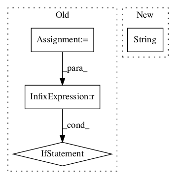

1c75176947730de8322acf6ad996096625e92e3a,tensorflow_lattice/python/rtl_layer.py,RTL,call,#RTL#Any#,217
Before Change
if not isinstance(items, list):
items = [items]
for tensor in items:
dim = tensor.shape.as_list()[1]
if dim == 1:
input_tensors.append(tensor)
else:
input_tensors.extend(tf.split(tensor, dim, axis=1))
// outputs_for_monotonicity[0] are non-monotonic outputs
// outputs_for_monotonicity[1] are monotonic outputs
outputs_for_monotonicity = [[], []]
for monotonicities, inputs_for_units in self._rtl_structure:
// Create inputs to lattice layer by concatenating all the inputs.
lattice_inputs = []After Change
output_monotonicity = max(monotonicities)
// Call each lattice layer and store based on output monotonicy.
outputs_for_monotonicity[output_monotonicity].append(
self._lattice_layers[str(monotonicities) ](lattice_inputs))
if self.separate_outputs:
separate_outputs = {}In pattern: SUPERPATTERN
Frequency: 3
Non-data size: 4
Instances Project Name: tensorflow/lattice
Commit Name: 1c75176947730de8322acf6ad996096625e92e3a
Time:
Author: null
File Name: tensorflow_lattice/python/rtl_layer.py
Class Name: RTL
Method Name: call
Project Name: tensorflow/agents
Commit Name: b5ae1c6bde39f5130c975992198f1f8ee5200f9a
Time:
Author: null
File Name: tf_agents/policies/categorical_q_policy.py
Class Name: CategoricalQPolicy
Method Name: __init__
Project Name: NervanaSystems/coach
Commit Name: a1c56edd98898ed25db9c6ed1e05b50a0a85e097
Time:
Author: null
File Name: rl_coach/memories/non_episodic/differentiable_neural_dictionary.py
Class Name:
Method Name: load_dnd